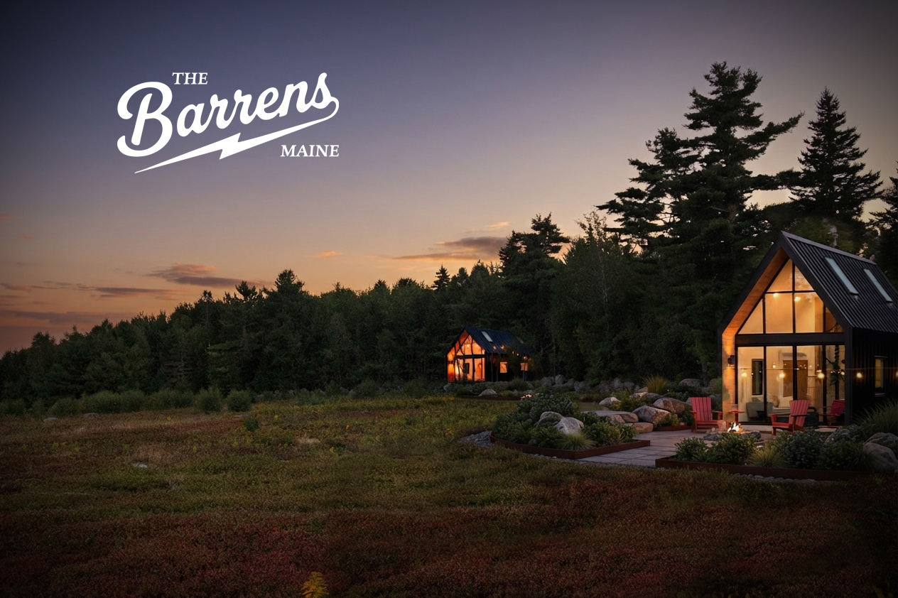

A small Nordic spa
A quiet place for hot and cold water, fresh air, and time outside. The idea is simple: a small thermal circuit set apart from the busier parts of the property and shaped by the surrounding woods.
THE BARRENS / WHAT COMES NEXT
A practical order for what comes first, what may follow, and how the land will shape every decision. This is what we're actively working on every single day, and what your support can help us bring to reality.
This vision is a work in progress. Images showing future ideas are concept mockups, not architectural plans or approved designs. We are working toward professional renderings as the project develops.
01 / THE WORKING FARM
We're starting with the farm. That means caring for the blueberry ground, opening a simple roadside stand, welcoming a small number of U Pick guests, and running the skate lounge responsibly. This is the work in front of us now.


02 / MOVEMENT THROUGH THE LAND
The action sports park is a long-term concept for a concrete flow skatepark, mountain bike trails, and other ways for guests to move through the property. It has not been built, and the details will evolve as we study the land and work through design, funding, and permitting.
LONG-TERM CONCEPT / NOT BUILT
A FUTURE GATHERING
The Blueberry Jam is a future gathering built around live music, local art, skateboarding, mountain biking, and time outside. It is an event we hope to grow into, not a monthly public event that is running today.
MUSIC / ART / SKATEBOARDING / MOUNTAIN BIKING
04 / A SMALLER WAY TO STAY
The micro resort is a longer-term hospitality idea where a small number of guests could stay and experience the barrens and surrounding ecosystem. It does not have an opening date, and any version of it would follow the farm, U Pick, farm stand, and skate lounge.
LONGER-TERM IDEA / NO OPENING DATE


A quiet place for hot and cold water, fresh air, and time outside. The idea is simple: a small thermal circuit set apart from the busier parts of the property and shaped by the surrounding woods.
Mountain bike trails and a bike park worked into the existing terrain, alongside a custom concrete flow skatepark reserved for overnight guests.
A small number of places to stay near the wild blueberry fields, where guests could wake with the barrens outside and experience the land as it changes through the Maine seasons.
HOW WE MOVE FORWARD
These ideas are possibilities, not amenities or opening dates we can promise today. We will build in phases and let the land, permits, funding, and real use of the property guide what comes next.
START WITH THE LAND
Get field updates, U Pick availability, farm stand progress, and the decisions shaping what may come next.